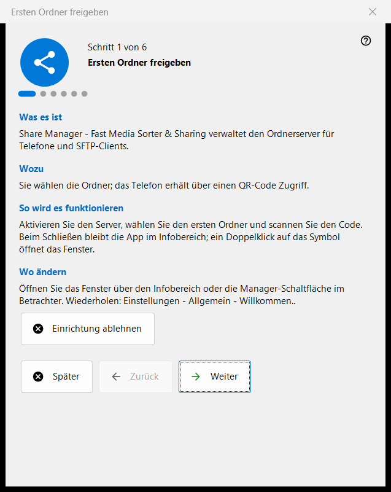
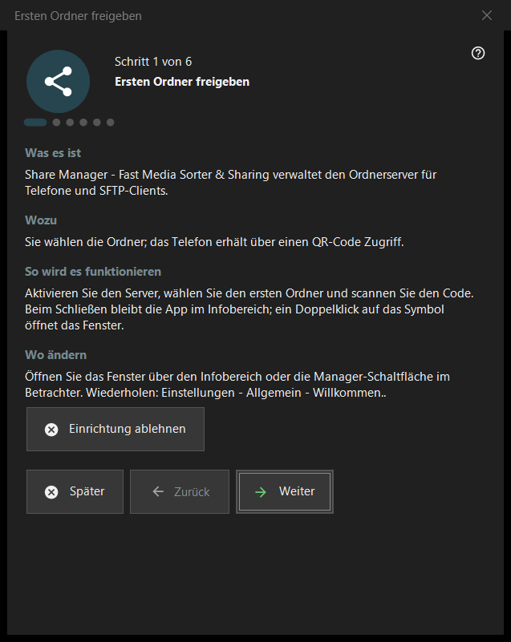

Ersten Ordner freigeben
Verwendungszweck
Ein Assistent mit sechs Schritten, der Sie von Null zu einem Ordner führt, der für Ihr Telefon bereitgestellt wird: Er schaltet den Server ein, wählt den ersten Ordner, legt den Port und die Grundoptionen fest und endet mit einer Statusprüfung. Er öffnet sich beim ersten Start des Share Managers und kann in den Einstellungen erneut aufgerufen werden.


In dieser Reihenfolge
- Lesen Sie die Einführung und drücken Sie «Weiter».
- Drücken Sie auf der Seite «Server einschalten» die Schaltfläche einmal und bestätigen Sie die Administratorabfrage.
- Wählen Sie den ersten Ordner und seine Optionen.
- Behalten Sie den Port bei oder ändern Sie ihn.
- Legen Sie Sprache, Autostart und Optionen für das lokale Netzwerk fest.
- Prüfen Sie auf der letzten Seite den Status, öffnen Sie den QR-Code und drücken Sie «Fertig».
Die Elemente
Schritte und Schaltflächen
Die Fußzeile zeigt «Schritt N von 6». «Zurück» und «Weiter» wechseln zwischen den Seiten, «Weiter» wird auf der letzten Seite zu «Fertig», «Später» schließt den Assistenten und behält, was Sie bereits bestätigt haben, und «Einrichtung ablehnen» schließt ihn endgültig. Jede Seite hat vier kurze Blöcke: «Was es ist», «Wozu», «So wird es funktionieren» und «Wo ändern».
Server einschalten
Bis zu diesem Schritt ist der Server aus. Die Schaltfläche zum Einschalten verlangt einmal Administratorrechte und fügt eine Windows-Firewall-Regel für das Programm hinzu. Wenn Sie die Abfrage abbrechen, bleibt der Server aus und Sie können es erneut versuchen; ist er bereits an, steht auf der Seite, dass keine weitere Rechteerhöhung nötig ist.
Erster Ordner
Wählen Sie einen Ordner, danach seinen Namen, das Profil und den Zugriff. «Erste Ressource jetzt hinzufügen..» öffnet den Ressourcenassistenten. Zum Fortfahren ist mindestens ein Ordner nötig. Die Einstellungen gehen an den Server, und die Ordner lassen sich weiterhin in der Liste des Hauptfensters bearbeiten.
Port
«Vom System gewählt» weist einmal einen Port zu und behält ihn; mit «Fester Port:» geben Sie eine eigene Nummer ein, zum Beispiel für die Portweiterleitung im Router. Die Nummer steht in jedem QR-Code und jeder .fmscfg-Datei, daher werden bereits ausgegebene Codes ungültig, wenn Sie sie später ändern. Die Firewall-Regel gehört zum Programm, nicht zum Port.
Grundeinstellungen
«Sprache der Oberfläche», «Beim Windows-Anmelden starten», «Managerfenster beim Start öffnen» und «Nur lokales Netzwerk (kein Internetzugriff)». Der Modus für das lokale Netzwerk schaltet die Portweiterleitung und die Internetadresse ab. Die Startoption der Store-Version wird in den Windows-Einstellungen verwaltet.
Fertig
Die letzte Seite prüft den Server und die gewählten Ordner und zeigt das Ergebnis; ein grüner Status bedeutet, dass tatsächlich eine Freigabe mit Ordnerzugriff läuft. «QR-Code für das Telefon» öffnet den Code, «Aktualisieren» wiederholt die Prüfung. Braucht der Status Aufmerksamkeit, beheben Sie die Ursache im Hauptfenster oder gehen Sie zum Ordnerschritt zurück.
Assistent erneut starten
Einstellungen - Allgemein - «Willkommen..» öffnet ein Menü mit «Ordnereinrichtung wiederholen», das diesen Assistenten erneut startet.
Managereinstellungen · SFTP-Freigabeeinstellungen · Einstellungen des Austauschservers